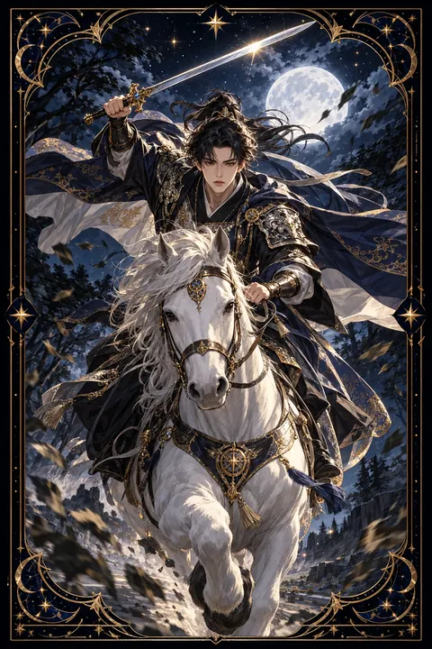

검 기사 카드 — 거침없는 추진력
검 기사 카드 한눈에 보기
검 기사 카드 상징 읽기

동네보살의 카드 그림은 전통 라이더–웨이트 덱의 뜻을 새 그림으로 옮긴 것입니다. 아래 상징 설명은 전통 덱의 그림을 기준으로 합니다.
검 기사는 흰 말을 타고 검을 높이 치켜든 채 전속력으로 달려가는 인물입니다. 말의 앞발이 공중으로 뛰어올라 있어 멈출 생각 없이 목표를 향해 돌진하는 강한 추진력을 보여 줍니다.
흰 말은 순수한 의도와 곧은 신념을 상징합니다. 기사가 입은 갑옷과 붉은 망토는 행동하려는 열정을 나타내고 치켜든 검은 날카로운 판단력과 결단을 뜻합니다.
배경의 나무들은 거센 바람에 한쪽으로 크게 휘어져 있고 구름은 조각조각 흩어져 있습니다. 새들도 바람에 흩날리듯 날아갑니다. 공기 원소의 빠르고 거센 움직임을 강조하는 장치로 변화가 순식간에 일어나는 상황을 뜻합니다. 기사의 시선은 앞만 향하고 있어 목표 하나만 바라보는 집중력을 드러내지만 주변을 살피지 못하는 위험도 함께 담고 있습니다.
검 기사 카드 정방향 뜻
정방향 검 기사는 뚜렷한 목표를 향해 힘차게 내달리는 흐름을 보여 줍니다. 오래 고민하던 문제에 결단을 내리고 곧바로 행동으로 옮길 힘이 생깁니다. 머리 회전이 빠르고 의사 표현이 분명해져 설득력도 높아집니다.
이 카드가 나왔다면 망설이던 일을 지금 시작하는 것이 좋습니다. 기회가 빠르게 지나갈 수 있으니 준비가 어느 정도 되었다면 과감하게 움직여 보세요. 경쟁이 있는 상황에서도 앞서 나갈 기운이 강합니다.
다만 속도가 빠른 만큼 놓치는 것도 생길 수 있습니다. 함께 일하는 사람들이 따라오고 있는지 확인하고 중요한 세부 사항은 한 번 더 점검하세요. 직설적인 말투가 상대에게 날카롭게 느껴질 수 있으니 전달 방식에도 조금 신경을 쓰면 추진력이 더 큰 성과로 이어집니다.
검 기사 카드 역방향 뜻
역방향 검 기사는 추진력이 방향을 잃고 무모함으로 바뀐 모습입니다. 충분히 생각하지 않고 서둘러 결정했다가 예상치 못한 문제에 부딪히기 쉽습니다. 조급함 때문에 계획이 자주 바뀌고 정작 끝맺는 일은 줄어들 수 있습니다.
말이 날카로워지는 것도 경계해야 합니다. 감정이 앞선 직설적인 표현이 주변 사람에게 상처를 주고 관계를 어렵게 만들 수 있습니다. 달리고 싶은 의욕은 큰데 여건이 따라 주지 않아 답답함을 느끼는 상태를 뜻하기도 합니다.
지금은 속도를 늦추고 목표와 방향을 다시 확인할 때입니다. 급한 결정은 하루 정도 미루고 주변의 의견을 들어 보세요. 방향이 바로 서면 원래의 추진력은 다시 좋은 결과를 향해 움직입니다. 서두름을 멈추는 것은 포기가 아니라 더 정확하게 달리기 위한 준비라는 점을 기억하세요.
연애에서 검 기사 카드
솔로라면 마음에 드는 사람이 생겼을 때 빠르게 다가가는 힘이 생기는 시기입니다. 적극적인 표현이 관계를 단숨에 진전시킬 수 있으니 망설이지 말고 솔직하게 마음을 전해 보세요. 첫 만남에서 강한 인상을 남기기도 쉽습니다.
사귀는 중이라면 둘 사이에 새로운 활력이 생기거나 중요한 결정을 빠르게 내리게 될 수 있습니다. 다만 자신의 감정 속도에만 맞춰 밀어붙이면 상대는 숨이 막힐 수 있으니 두 사람의 걸음을 맞춰 가는 편이 좋습니다. 다툼이 생겼을 때는 옳고 그름을 따지기보다 상대의 이야기를 끝까지 들어 주는 것이 관계를 오래 이어 주는 비결입니다. 짧고 분명한 표현은 장점이지만 말투는 부드럽게 다듬어 전해 보세요. 함께 계획을 세울 때 상대에게 선택권을 하나 넘겨 주는 배려도 필요합니다.
재회·속마음 질문에서 검 기사 카드
재회 질문에서 검 기사가 나오면 일이 갑자기 빠르게 전개될 수 있다는 뜻입니다. 연락이 예고 없이 오거나 짧은 시간 안에 결론이 날 가능성이 있습니다. 다가가고 싶다면 망설이지 말고 분명한 말로 뜻을 전하는 편이 좋습니다. 다만 감정에 휩쓸려 서두르면 예전과 같은 다툼이 반복될 수 있습니다. 왜 헤어졌는지 차분히 돌아보고 달라진 점을 먼저 정리해 두세요. 상대가 아직 준비되지 않았다면 답을 재촉하기보다 시간을 주는 여유도 필요합니다. 속도보다 방향이 맞아야 다시 만난 관계가 오래갑니다. 연락을 주고받는 간격도 상대에게 맞춰 조절해 보세요. 조급함을 내려놓을수록 대화는 부드러워집니다.
일·금전에서 검 기사 카드
일과 직장에서는 추진력과 결단력이 빛나는 시기입니다. 지지부진하던 프로젝트를 앞장서서 밀고 가거나 빠른 판단이 필요한 업무에서 두각을 나타낼 수 있습니다. 새로운 도전이나 이직처럼 과감한 선택을 고민하고 있다면 실행에 옮길 기운이 좋습니다. 다만 혼자 앞서가면 팀의 호흡이 흐트러질 수 있으니 진행 상황을 자주 나누세요.
재정 쪽에서는 미뤄 둔 정산이나 납부를 빠르게 처리하기 좋습니다. 충동적인 지출이나 성급한 계약은 조심해야 합니다. 큰돈이 드는 결정은 조건을 꼼꼼히 확인한 뒤 내리는 것이 안전합니다. 일정표를 세워 두면 속도와 정확성을 함께 챙길 수 있습니다. 속도를 내기 전에 함께 가는 사람들과 방향을 한 번 맞춰 두시기 바랍니다.
검 기사 카드는 예일까 아니오일까
목표를 향해 빠르게 달려가는 카드이므로 지금 움직이면 결과가 빨리 나온다는 점에서 예로 봅니다. 다만 역방향이라면 서두르다 일을 그르칠 수 있어 준비를 점검한 뒤 움직여야 합니다.
자주 묻는 질문
검 기사 카드 역방향은 나쁜 뜻인가요?
역방향 검 기사는 추진력이 방향을 잃고 무모함으로 바뀐 모습입니다. 충분히 생각하지 않고 서둘러 결정했다가 예상치 못한 문제에 부딪히기 쉽습니다. 조급함 때문에 계획이 자주 바뀌고 정작 끝맺는 일은 줄어들 수 있습니다.
검 기사 카드가 연애 질문에 나오면요?
솔로라면 마음에 드는 사람이 생겼을 때 빠르게 다가가는 힘이 생기는 시기입니다. 적극적인 표현이 관계를 단숨에 진전시킬 수 있으니 망설이지 말고 솔직하게 마음을 전해 보세요. 첫 만남에서 강한 인상을 남기기도 쉽습니다.
타로 카드는 어떻게 뽑나요?
타로 카드 페이지에서 78장을 섞으면 그중 22장이 펼쳐집니다. 마음이 가는 세 장을 고르면 과거·현재·미래 자리에 놓이고, 한 장씩 뒤집어 자리와 방향에 맞는 풀이를 읽습니다. 정방향과 역방향은 섞는 순간 정해집니다.